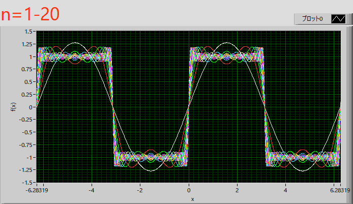

フーリエ級数展開-06
実際にいろいろな波形をフーリエ級数展開してみましょう．まずは矩形波
・矩形波
矩形波，
\( \Large \left\{ \begin{array}{c} \hspace{10pt} -1 \hspace{20pt} ( \pi \leq x < 0) \\ \hspace{20pt} 1 \hspace{20pt} (0 \leq x < \pi) \end{array} \right. \)
の場合を考えます．
フーリエ級数展開は，
\( \Large \displaystyle f(x) = \color{red}{\frac{a_0}{2}} + \sum_{n=1}^{ \infty} \left( a_n \ cos \frac{2 \pi n x}{T} + b_n \ sin \frac{2 \pi n x}{T}\right) \)
で，各定数は，
\( \Large \displaystyle a_0 = \color{red}{\frac{2}{T}} \int_0^T f(x) \ dx \)
\( \Large \displaystyle a_n = \frac{2}{T} \int_0^T f(x) \ cos \frac{2 \pi n x}{T} \ dx \)
\( \Large \displaystyle b_n = \frac{2}{T} \int_0^T f(x) \ sin \frac{2 \pi n x}{T} \ dx \)
の式を使って計算してみましょう．
周期が，ーL～L，の場合には，前ページ，に記したように，
\( \Large \displaystyle f(x) = \color{red}{\frac{a_0}{2}} + \sum_{n=1}^{ \infty} \left( a_n \ cos \ n \frac{ \pi}{L}x + b_n \ sin \ n \frac{ \pi}{L}x \right) \)
\( \Large \displaystyle a_0 = \color{red}{\frac{1}{L}} \int_{- L}^{ L} f(x) \ dx \)
\( \Large \displaystyle a_n = \frac{1}{L} \int_{ - L}^{ L} f(x) \ cos \ \left( n\frac{ \pi}{L}x \right) \ dx \)
\( \Large \displaystyle b_n = \frac{1}{L} \int_{ - L}^{ L} f(x) \ sin \ \left( n\frac{ \pi}{L}x \right) \ dx \)
となるので，L＝π，となり，
\( \Large \displaystyle f(x) = \color{red}{\frac{a_0}{2}} + \sum_{n=1}^{ \infty} \left( a_n \ cos \ (n x) + b_n \ sin \ (n x) \right) \)
\( \Large \displaystyle a_0 = \color{red}{\frac{1}{\pi}} \int_{- \pi}^{ \pi} f(x) \ dx \)
\( \Large \displaystyle a_n = \frac{1}{\pi} \int_{ - \pi}^{ \pi} f(x) \ cos \ \left( nx \right) \ dx \)
\( \Large \displaystyle b_n = \frac{1}{\pi} \int_{ - \pi}^{ \pi} f(x) \ sin \ \left( nx \right) \ dx \)
を計算すればいいことになります．
・a0
積分範囲によって，f(x)の値が異なるので，それぞれの領域の積分に分けていきます．
\( \Large \displaystyle \frac{a_0}{2} = \frac{1}{2} \color{red}{\frac{1}{\pi}}\int_{- \pi}^{ \pi} f(x) \ dx
= \frac{1}{2 \pi} \left\{ \int_{- \pi}^{ 0} (-1) \ dx + \int_{0}^{ \pi} (1) \ dx \right\}
= \frac{1}{2 \pi} \left\{ - [ x ]_{- \pi}^0 + [x ]_0^{ \pi}\right\}
= \frac{1}{2 \pi} \left\{ - \pi + \pi \right\} = \color{red}{0}
\)
・an
\( \Large \displaystyle a_n
= \frac{1}{\pi} \int_{ - \pi}^{ \pi} f(x) \ cos \ \left( nx \right) \ dx
= \frac{1}{ \pi} \left\{ \int_{- \pi}^{ 0} -cos \ (nx) \ dx + \int_{0}^{ \pi} cos \ (nx) \ dx \right\} \)
\( \Large \displaystyle = \frac{1}{ \pi} \left\{ \left[ - \frac{1}{n } sin \ (nx) \right]_{- \pi}^0 + \left[ \frac{1}{n } sin \ (nx) \right]_0^{ \pi} \right\}
\)
sin(0)，sin(nπ)，すべて0となりますので，an=0，となります．
・bn
\( \Large \displaystyle b_n
= \frac{1}{\pi} \int_{ - \pi}^{ \pi} f(x) \ sin \ \left( nx \right) \ dx
= \frac{1}{2 \pi} \left\{ \int_{- \pi}^{ 0} -sin \ (nx) \ dx + \int_{0}^{ \pi} sin \ (nx) \ dx \right\} \)
\( \Large \displaystyle = \frac{1}{ \pi} \left\{ \left[ \frac{1}{n } cos \ (nx) \right]_{- \pi}^0 + \left[ -\frac{1}{n } cos \ (nx) \right]_0^{ \pi} \right\} \)
\( \Large \displaystyle = \frac{1}{ n \pi} \left\{ 1 - ( -1 )^n \right\} - \frac{1}{ n \pi} \left\{ ( -1 )^n - 1 \right\} \)
ここでは，ここ，で説明した，三角関数と±１との関係，を使いました．
\( \Large \displaystyle = \frac{2}{ n \pi} \left\{ 1 - ( -1 )^n \right\} \)
この場合，
ｎが偶数：0
ｎが奇数：\( \Large \displaystyle \frac{4}{ n \pi}
\)
となりますので，
\( \Large \displaystyle f(x) = \frac{4}{ \pi} \left\{ sin \ x + \frac{1}{3} sin \ (3x) + \frac{1}{5} sin \ (5x) + ........ \right\} \)
となります．
グラフで図示すると，

となります．
では，振幅，周期を変えてみるとどうなるでしょう？